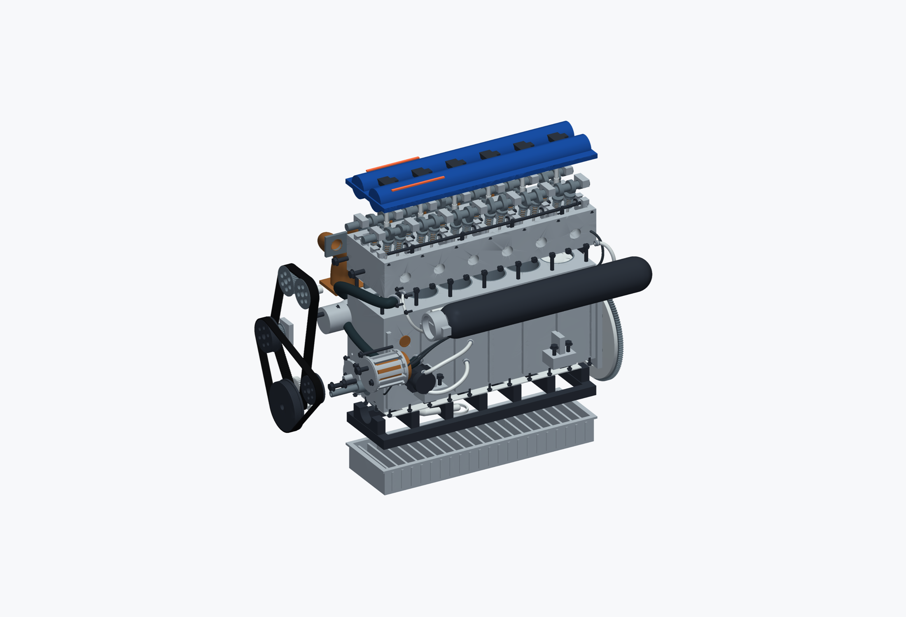
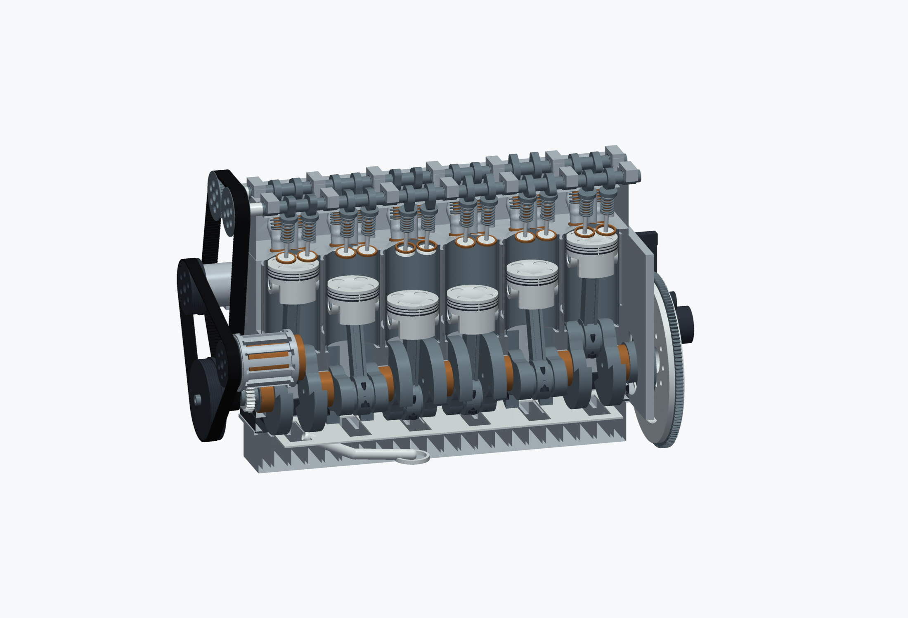
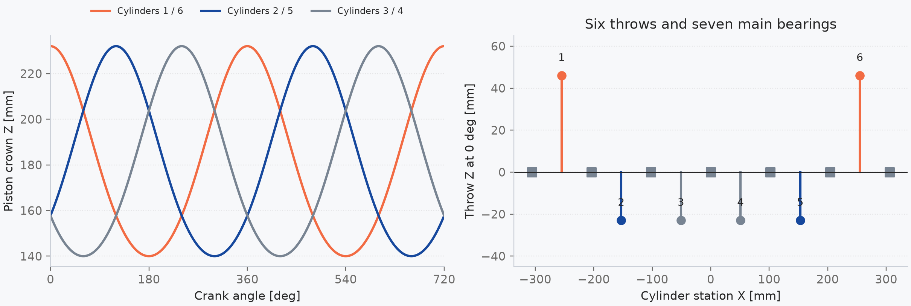

I6 Astra: assembly and motion
Editable native parts, involute gears, nominal fasteners, belts, and spline service routes.
Watch the assembly and mechanism
4 minutes 29 seconds. The model was authored in nTop; this film uses host-rendered geometry and illustrative motion. The design-family power figures are estimates from stated operating assumptions.
Motion video is available in the separate downloadable collection. Static assembly views are retained here.
Recorded nTop viewport motion
This 12-second loop uses 72 native nTop viewport captures from the recorded motion study. It is separate from the host-rendered overview film.
Motion video is available in the separate downloadable collection. Static assembly views are retained here.
Recorded geometry and lessons from the source work. Public-package checks run offline. No new native evaluation is claimed.
01
An assembly with explicit controls
The source encodes host dimensions in millimetres and recipe dimensions in SI. A complete dependency closure carries the mechanism, parts, and checks into nTop.


02
Gears and service routes
Gear engagement needs numerical tooth-profile checks. A screenshot alone does not verify backlash or contact. Native spline routes keep cable and hose paths editable. Their sampled clearances do not establish installation or service access.


03
Inspect inside and compare motion
Use the inspection model and a small kinematic closure to verify motion before evaluating the full geometry. Compare analytic expectations with measured native scalars. Preserve the distinction between rendering a rigid transform and evaluating a changed native graph.


04
Reproduce the source
Run the root build command for i6-astra. Generated recipes, layouts, and checks stay under output/. The captured figures record the original report revision. They are examples of presentation and do not replace checks on a rebuilt model.